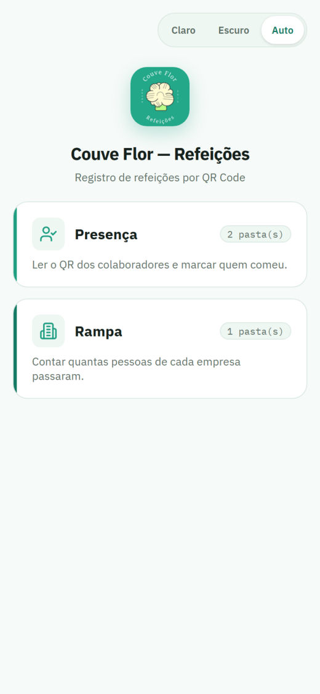
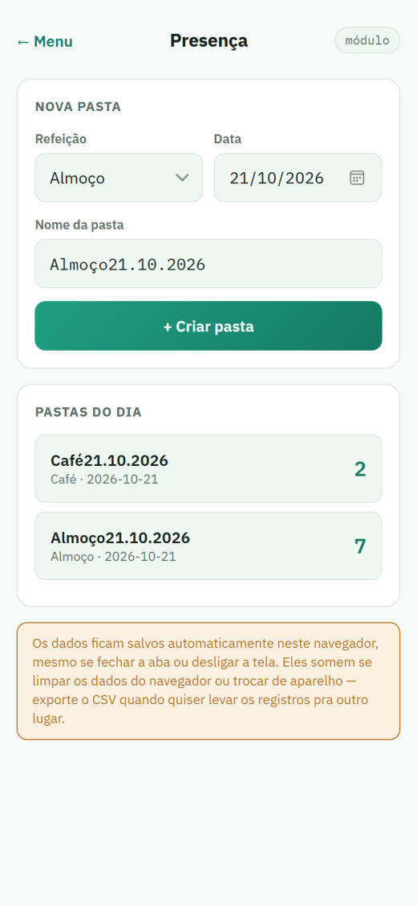
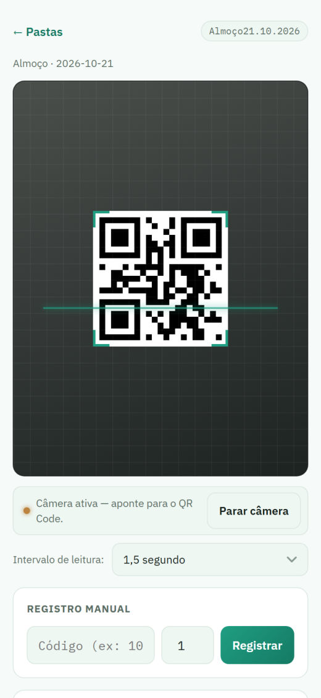
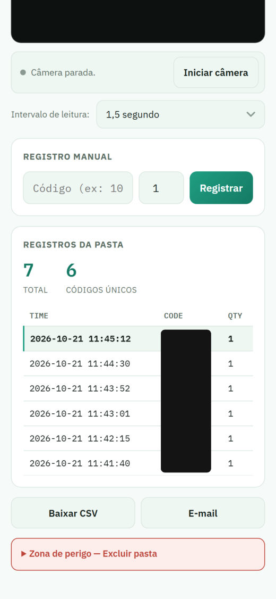
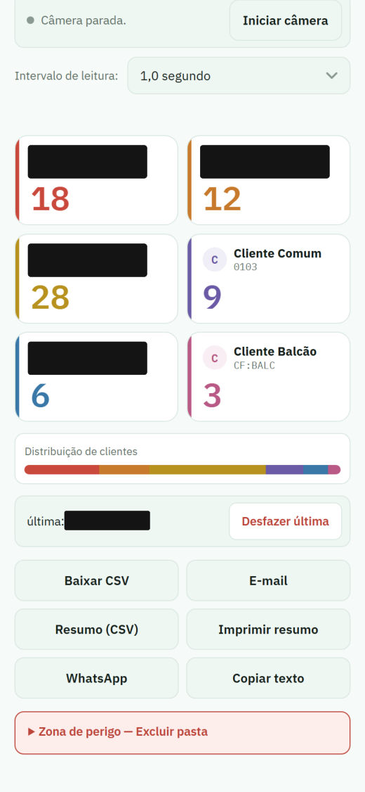
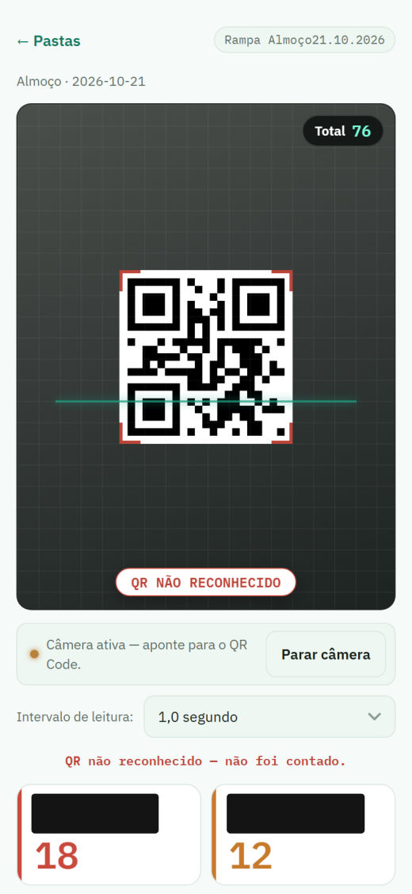

PORTA 02 · LEITOR DE QR CODE
Cada refeição servida vira uma linha.
No restaurante, o celular lê o QR do crachá (ou o cartão do cliente) e registra a leitura na pasta da refeição. Escolha a refeição, toque nos QR Codes e veja a impressora registrar.
QUAL REFEIÇÃO?
TOQUE PARA ABRIR A PASTA
Toque num QR para ler
O APP DE VERDADE
Do crachá à planilha.
Prints do guia do operador. As telas com câmera são ilustrativas; códigos de crachá e nomes de clientes estão tarjados.

1 Dois módulos: Presença e Rampa 
2 Uma pasta por refeição e data 
3 Lê o crachá pela câmera 
4 Cada leitura vira TIME · CODE · QTY 
5 Rampa: pessoas por cliente 
6 QR estranho é recusado
FICHA TÉCNICA
Leitor de QR Code Couve Flor
- Problema
- Contar as refeições servidas, por refeição e por cliente, para fechar o "realizado" com cada empresa atendida pelo restaurante.
- Solução
- Web app no celular: abre a câmera traseira, lê o QR em intervalo fixo (0,5 a 1,5 s) e grava cada leitura (TIME, CODE, QTY) na pasta da refeição. Vibra, apita e pisca a cada leitura. Exporta CSV no formato da planilha da operação.
- Regras de negócio
- Repetidos contam (cada leitura é uma linha, sem bloqueio). TIME é sempre o horário real da leitura. Na Rampa, só cartões oficiais de cliente somam; qualquer outro QR é recusado. Excluir pasta exige exportar antes e duas confirmações.
- Segurança
- Sem innerHTML com dado lido (correção de XSS). CSV neutraliza fórmulas (= + - @) para não virarem comando no Excel. Biblioteca de leitura e fontes hospedadas no próprio app, sem CDN.
- Dados
- Ficam só no celular (armazenamento do navegador) até a exportação. Próxima versão: Google Apps Script + Planilhas, vários celulares na mesma pasta e fila offline para nenhuma leitura se perder.
- Stack
- HTML · CSS · JavaScript puros · getUserMedia · jsQR · localStorage · CSV · Web Share API · GitHub Pages